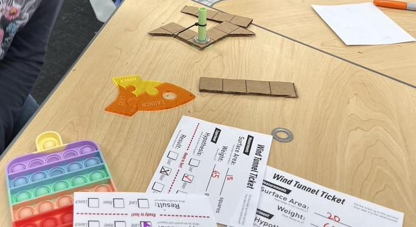
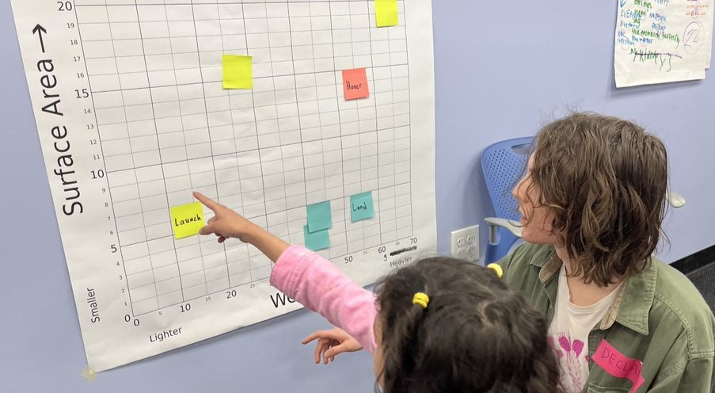
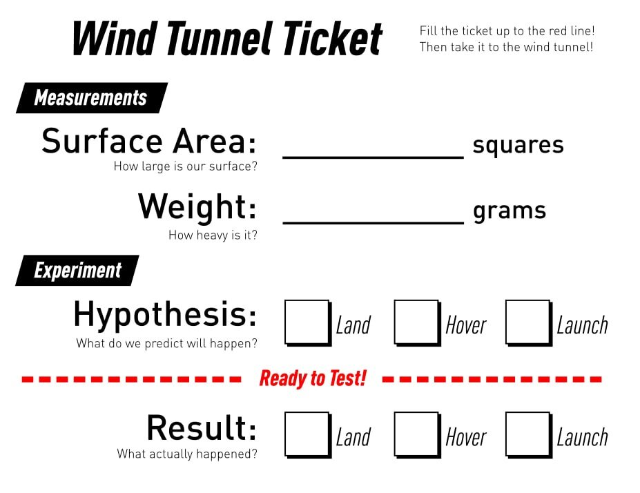
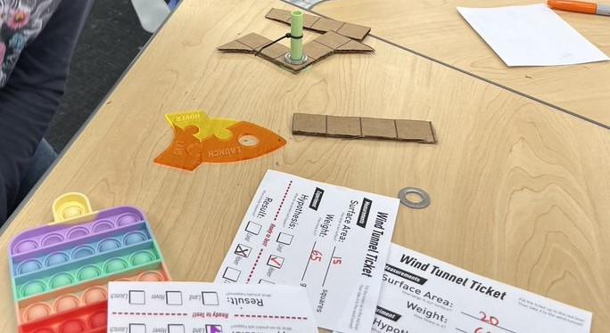
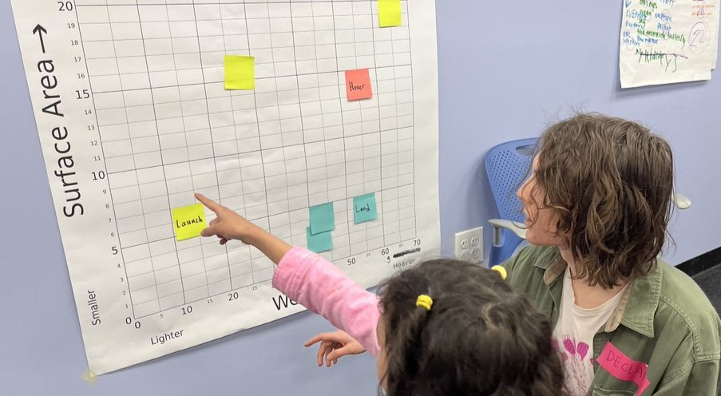
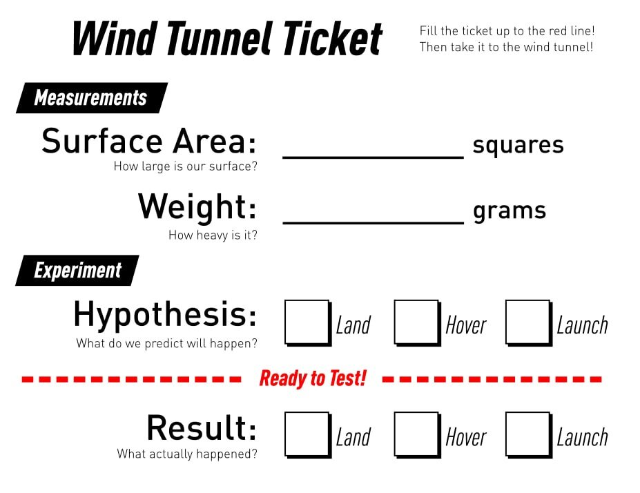

Description
Would your students be excited about interacting with a roaring
blast of wind? In this workshop, students will learn about air
resistance while building hovercrafts that sink, float, or fly out
of the top of the wind tunnel! They’ll practice being engineers by
experimenting with weights and surface area to build their
hovercrafts, as well as recording their variables, graphing their
results, and making hypotheses (guesses).
Materials + Preparation
This workshop requires a wind tunnel, which can be made with a
strong fan, cardboard, and duct tape. The Teacher's Guide discusses
optimal materials, including instructions to 3D-print parts for the
hovercraft experimentation. Lower-fi materials can be used, however.
This workshop has been wildly popular with students at a variety of
locations, ranging from elementary school through high school. For
younger elementary students, we suggest framing the challenge as
iterating on hovercraft designs until they get a version that sinks,
a version that floats, and a version that sinks. For older high
school students, we recommend focusing on the hardest challenge,
which is to create a hovercraft that floats. To increase difficulty,
limit the number of trials to achieve the elusive float!
This poster gives more information on this workshop and the
pedagogies used to develop it.


 




